Rome is an open-air museum: however, in this narrative, you can explore the city through the eyes of the women who inhabited, defended, and transformed beyond the official image everybody knows. The itinerary reconstructs the evolution of women's conditions from the Fascist era through the economic boom. The chosen locations are not mere scenic backgrounds, but living spaces of daily resistance, struggles for independence, and social emancipation.
TODAY
IN THE MOVIE
1 / 8
Palazzo Federici- Una giornata particolare (1977)
Environment: THE HOME
An enormous 1930s residential complex designed as a city within a city. Here, the domestic space becomes the boundary within which Antonietta is forced to live.
Palazzo Federici occupies an entire block in the Nomentano district and consists of courtyards, stairs, passageways, and hundreds of apartments. In A Special Day, Antonietta remains inside the building while Rome celebrates Hitler's visit.
Almost the entire film is set inside Palazzo Federici, which becomes a sort of microcosm of Fascist society.
Antonietta spends most of her life inside Palazzo Federici. Rome is just outside, but her duties as a wife and mother keep her away from public life.
On the day Hitler visits Rome, the streets are full of people attending the celebrations. But Antonietta has to stay at home to take care of her family and household. Her life shows how women were expected to dedicate themselves only to their husbands, children and homes. When she unexpectedly meets her neighbour Gabriele, her ordinary day changes and she begins to look at her life from a different perspective.
Most of A Special Day was filmed inside the real Palazzo Federici, which can still be seen in the Rome of today.
Scola turns Palazzo Federici into a visual metaphor for Antonietta’s exclusion: while Fascist public life occupies Rome, she remains confined to the domestic sphere.
Scola constructs Palazzo Federici as a microcosm of Fascist society. The public spectacle of Hitler’s visit occupies Rome,
while Antonietta remains associated with motherhood and domestic service. Windows, balconies and courtyards constantly remind us that the public city is physically close but socially inaccessible to her.
The encounter with Gabriele temporarily transforms this domestic environment: a space initially associated with conformity becomes one in which dominant ideas about gender and political identity can be questioned.
The film repeatedly uses windows and the central courtyard to connect otherwise separate apartments, turning the architecture itself into an important part of the visual storytelling.
Technical Details & Metadata
For each scene, structured metadata has been integrated to detail the cinematic context of the film, the location where it was shot, and the academic framework of the project . To enable semantic web interoperability and digital cataloging, this data is modeled using established formal ontologies: Schema.org for entities and web structures, Dublin Core (dcterms) for bibliographic and project metadata, and CIDOC CRM for cultural heritage and architectural classifications.
Cinematic Context
schema: name: Una giornata particolare (1977)
schema: director: Ettore Scola
schema: episode: DESCRIZIONE CHIEDI
schema: direction: South-East (135°)
dcterms: type: strong> residential complex
Location
schema: name: Palazzo Federici
schema: address : Viale XXI Aprile, 21-29 Roma
schema: GeoCoordinates: 41°55′09.4″N 12°31′13.7″E
crm: P2_has_type Italian Rationalist Architecture
crm:P4_has_time_span: 1930s
schema: OpeningDate: 1937
Project
dcterms: subject Female Encipation Trough Cinema
dcterms: language: en
dcterms:rights Academic use - Alma Mater Studiorum, University of Bologna
Replication instructions:
Stand opposite the façade, centre the main architectural
axis in the frame and tilt the camera upward, keeping the
upper cornice and a small portion of the sky visible.
External details
Scan the QR code below to access additional documentation.
TODAY
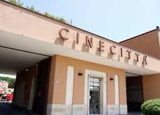
IN THE MOVIE
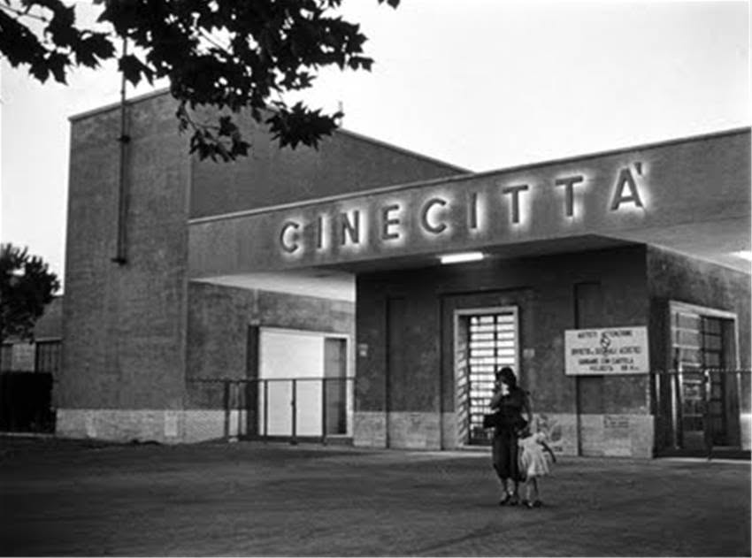
2 / 8
Cinecittà - Bellissima (1951)
Environment: THE CITY OF THE IMAGE
Behind the gates of Cinecittà, Rome ceases to be just a city and becomes an image, a spectacle, and a promise of success.
In Bellissima, Maddalena takes her daughter Maria to an audition, convinced that cinema can offer her a better future.
Bellissima also depicts film studios in their less glamorous aspects, revealing hard work and illusions.
Cinecittà looks like a place where dreams can come true, but Maddalena soon discovers that success has a price.
Maddalena takes her daughter Maria to Cinecittà for an audition because she believes that becoming an actress could change her future.
She does everything she can to help Maria succeed. But behind the exciting world of cinema she discovers competition and people willing to take advantage of her hopes. Cinecittà therefore becomes a place where Maddalena learns that entering a new world does not always mean being accepted by it.
Parts of Bellissima were filmed at the real Cinecittà studios, so the film shows actual spaces connected with the Italian film industry.
Visconti presents Cinecittà as both a dream factory and a mechanism of selection, questioning the promise that cinema can offer social mobility to everyone.
Bellissima operates as a reflection on the mechanisms of cinematic representation. Maddalena’s ambition brings her from working-class Rome into Cinecittà,
but Visconti progressively dismantles the mythology of the studio as a democratic space of opportunity. Maria becomes an object of selection and ridicule, while Maddalena discovers the economic mechanisms surrounding her desire for social advancement.
Female mobility is here presented ambiguously: crossing the gates of Cinecittà expands Maddalena’s territory, but does not automatically grant her authority within it.
The film blurs fiction and reality by including figures connected to the actual Italian film industry.
Technical Details & Metadata
For each scene, structured metadata has been integrated to detail the cinematic context of the film, the location where it was shot, and the academic framework of the project . To enable semantic web interoperability and digital cataloging, this data is modeled using established formal ontologies: Schema.org for entities and web structures, Dublin Core (dcterms) for bibliographic and project metadata, and CIDOC CRM for cultural heritage and architectural classifications.
Cinematic Context
schema: name: Bellissima(1951)
schema: director: Luchino Visconti
schema: episode: DESCRIZIONE CHIEDI
schema: direction: North-west (Azimuth 315°)
dcterms: type: Film Studio/Cinematic Set
Location
schema: name: Cinecittà Studios
schema: address : Via Tuscolana 1055, Roma
schema: GeoCoordinates: 41°51′N 12°34′E
crm: P2_has_type Industrial Architecture
crm:P4_has_time_span: 1930s
schema: OpeningDate: 1937
Project
dcterms: subject Female Encipation Trough Cinema
dcterms: language: en
dcterms:rights Academic use - Alma Mater Studiorum, University of Bologna
External details
Scan the QR code below to access additional documentation.
TODAY
IN THE MOVIE
3 / 8
Via Bodoni - C'è ancora domani (2023)
Environment: The neighborhood
In Testaccio, the front door opens onto a neighborhood made of courtyards, small shops, relationships, and social control.
The exteriors of Delia's house are located on Via Bodoni. Here, the domestic space extends into the courtyard.
The exterior shots of the house were actually filmed in Testaccio, while the interiors were reconstructed at the Cinecittà studios
When Delia leaves her house, her world becomes larger. The neighborhood allows her to meet people and experience a life beyond her family.
Delia often walks through her neighborhood for work and everyday errands.
These journeys may seem ordinary, but they allow her to meet other people and experience a world beyond her husband and family. Little by little, the streets become an important part of her independence.
The exterior of Delia’s house was filmed in Testaccio, while its interiors were reconstructed at Cinecittà.
Via Bodoni functions as a threshold between Delia’s oppressive domestic environment and the possibilities created by movement through the city.
The geography of There’s Still Tomorrow contributes directly to Delia’s character development. Domestic interiors are associated with her husband’s authority and repetitive labour, while the streets introduce encounters beyond his direct control. Via Bodoni is therefore neither completely private nor completely emancipatory: it functions as a threshold. Delia’s repeated movement across it gradually creates a personal geography extending beyond the family and prepares the transformation that structures the film’s conclusion.
The contrast between real exterior locations and reconstructed interiors reinforces the film’s dialogue between historical Rome and a deliberately stylised representation of the past.
Technical Details & Metadata
For each scene, structured metadata has been integrated to detail the cinematic context of the film, the location where it was shot, and the academic framework of the project . To enable semantic web interoperability and digital cataloging, this data is modeled using established formal ontologies: Schema.org for entities and web structures, Dublin Core (dcterms) for bibliographic and project metadata, and CIDOC CRM for cultural heritage and architectural classifications.
Cinematic Context
schema: name: C'è acnora domani (2023)
schema: director: Paola Cortellesi
schema: episode: Delia's house exteriors and neighborhood life in Testaccio
schema: direction: North-West (135°)
dcterms: type: strong> urban neighborhood
Location
schema: name: Via Bodoni (Testaccio district)
schema: address : Via Bodoni 98, Roma
schema: GeoCoordinates: 41.8780° N, 12.4750° E
crm: P2_has_type Popular Historic Quarter
crm:P4_has_time_span: Early 20th Century (Testaccio expansion period)
schema: OpeningDate: 1903
Project
dcterms: subject Female Encipation Trough Cinema
dcterms: language: en
dcterms:rights Academic use - Alma Mater Studiorum, University of Bologna
External details
Scan the QR code below to access additional documentation.
TODAY
IN THE MOVIE
4 / 8
Piazza and Market of Testaccio - C'è ancora domani
Environment: The neighborhood
The square and the market transform the neighborhood into a shared space where women work, talk, and build bonds.
Piazza Testaccio represents the neighborhood's civic space, while the market is a hub of exchange and daily work. Here, women’s presence is no longer confined to the home; they participate in the neighborhood's economic and social life. For Delia, her relationship with Marisa demonstrates that public space can foster solidarity and offer the chance to envision a different path
Part of the actual Testaccio Market was used to recreate Marisa’s workplace.
At the market, women work and help one another. Delia discovers that relationships outside the family can give her support and new possibilities.
The market is a busy place full of people and conversations. Here women are not isolated inside their homes but participate in the life of the neighborhood. Delia’s friendship with Marisa is especially important because it gives her someone outside her family whom she can trust. Their relationship shows how friendship and solidarity can help women imagine a different future.
Testaccio has historically been one of Rome’s best-known working-class neighborhoods, strongly connected with markets and community life.
The market introduces a collective dimension to female emancipation: public space becomes a network of labour and solidarity.
Cortellesi uses the social geography of Testaccio to move Delia’s emancipation beyond the individual dimension.
In the market, friendship and work coexist within the same public environment. Her relationship with Marisa contrasts with the isolation of domestic life and demonstrates how female agency can develop through networks of solidarity. Within the itinerary, this location therefore marks a transition from simply accessing public space to actively participating in its social and economic structures.
The choice of Testaccio connects Delia’s fictional story with a Roman district historically associated with labour and strong popular culture.
Technical Details & Metadata
For each scene, structured metadata has been integrated to detail the cinematic context of the film, the location where it was shot, and the academic framework of the project . To enable semantic web interoperability and digital cataloging, this data is modeled using established formal ontologies: Schema.org for entities and web structures, Dublin Core (dcterms) for bibliographic and project metadata, and CIDOC CRM for cultural heritage and architectural classifications.
Cinematic Context
schema: name: C'è ancora domani (2023)
schema: director: Paola Cortellesi
schema: episode: DESCRIZIONE CHIEDI
schema: direction: South-West (225°)
dcterms: type: strong> Public square
Location
schema: name: Piazza Testaccio & Mercato di Testaccio
schema: address : Piazza Testaccio, Roma
schema: GeoCoordinates: 41.8750° N, 12.4720° E
crm: P2_has_type Public Market & Community Hub Architecture
crm:P4_has_time_span: 20th/21st Century (Historic market relocated/revitalized)
schema: OpeningDate: 2012 (inauguration date of the new modern structure of the area)
Project
dcterms: subject Female Encipation Trough Cinema
dcterms: language: en
dcterms:rights Academic use - Alma Mater Studiorum, University of Bologna
External details
Scan the QR code below to access additional documentation.
TODAY
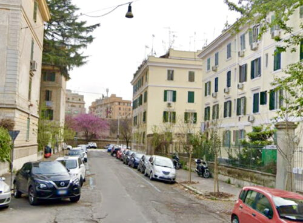
IN THE MOVIE
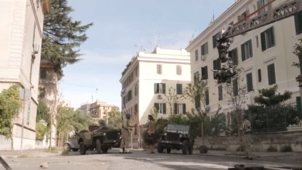
5 / 8
Lungotevere Testaccio - C'è ancora domani
Environment: The transition
The Tiber marks a physical and symbolic border: crossing it means leaving one's neighborhood and opening up to new possibilities.
The Lungotevere connects Testaccio to Porta Portese and Trastevere. In Delia’s journey, walking through Rome is not yet an act of absolute freedom; her movements are dictated by work and family. Yet, it is precisely by traversing the city that she encounters people, information, and opportunities for change that could not reach her at home.
The area near the Lungotevere is the setting for the meeting between Delia and the American soldier William—a pivotal figure in the story's development.
As Delia moves farther from home, she meets new people and discovers new possibilities. Walking through Rome slowly makes her world bigger.
Delia does not walk around Rome simply because she is free: most of her journeys are connected to work and family duties.
Yet going through the city gives her opportunities that she would never have at home. She meets different people and begins to see that her life could change. Moving through Rome therefore becomes an important part of her journey toward independence.
During her movements through this area of Rome, Delia meets William, the American soldier who becomes important to the development of her story.
Cortellesi transforms urban movement into a form of agency: Delia’s physical journey through Rome parallels her gradual movement away from domestic confinement.
Delia’s journeys initially remain functional, dictated by work and errands rather than leisure. But dispite this, Cortellesi progressively associates physical mobility with access to information and relationships outside the household. The Lungotevere functions as a liminal space between familiar Testaccio and a wider urban territory. Movement acquires narrative significance: Delia does not simply cross Rome geographically, but gradually expands the boundaries within which she can imagine and determine her future.
The presence of American soldiers connects Delia’s personal geography with the wider political and social transformations of post-war Rome.
Technical Details & Metadata
For each scene, structured metadata has been integrated to detail the cinematic context of the film, the location where it was shot, and the academic framework of the project . To enable semantic web interoperability and digital cataloging, this data is modeled using established formal ontologies: Schema.org for entities and web structures, Dublin Core (dcterms) for bibliographic and project metadata, and CIDOC CRM for cultural heritage and architectural classifications.
Cinematic Context
schema: name: C'è ancora domani (2023)
schema: director: Paola Cortellesi
schema: episode: Delia's walk along the river and meeting with the American soldier William
schema: OpeningDate: 1888 (start of construction on the historic Tiber embankments)
Project
dcterms: subject Female Encipation Trough Cinema
dcterms: language: en
dcterms:rights Academic use - Alma Mater Studiorum, University of Bologna
External details
Scan the QR code below to access additional documentation.
TODAY
IN THE MOVIE
6 / 8
Porta Portese and Piazza dei Mercanti - Mamma Roma
Environment: The public city
Between markets, commerce, and relationships, Rome becomes a space in which Mamma Roma tries to rebuild her life.
Porta Portese represents the city’s noisy, working-class side, whereas Piazza dei Mercanti introduces a more intimate space centered on social connections and job opportunities. Mamma Roma attempts to leave prostitution behind, sell goods at the market, and find employment for her son. The city seems to offer her a chance at redemption, yet it remains rife with social inequalities that hinder her emancipation.
The Meo Patacca restaurant in Piazza dei Mercanti appears in the film during Mamma Roma’s attempt to secure a job for Ettore.
Mamma Roma works in the city and tries to build a better life for herself and her son. But being independent does not make all her difficulties disappear.
Mamma Roma wants to leave her old life behind and create better opportunities for her son Ettore. She works at the market and moves confidently through Rome, trying to change their future. But her past and her social condition continue to limit her possibilities. The city gives her greater independence, but it cannot remove all the inequalities she faces.
Mamma Roma is played by Anna Magnani, one of the most famous actresses in Italian cinema and a figure strongly associated with cinematic representations of Rome.
Pasolini separates spatial freedom from social emancipation: Mamma Roma can occupy the public city, but class inequality continues to determine her possibilities.
Mamma Roma complicates the idea that access to public space automatically produces emancipation. The protagonist possesses considerable urban agency: she works, negotiates, moves independently and attempts to use social relationships to improve Ettore’s position. Yet Pasolini’s Rome remains structured by class divisions that individual determination cannot overcome. So her trajectory exposes a fundamental distinction between mobility and power: Mamma Roma has acquired the freedom to occupy the city without acquiring the social power necessary to determine her future within it.
Pasolini repeatedly films Anna Magnani walking while speaking, making her movement, voice and physical presence an integral part of the film’s representation of Rome.
Technical Details & Metadata
For each scene, structured metadata has been integrated to detail the cinematic context of the film, the location where it was shot, and the academic framework of the project . To enable semantic web interoperability and digital cataloging, this data is modeled using established formal ontologies: Schema.org for entities and web structures, Dublin Core (dcterms) for bibliographic and project metadata, and CIDOC CRM for cultural heritage and architectural classifications.
Cinematic Context
schema: name: Mamma Roma (1962())
schema: director: Pier Paolo Pasolini
schema: episode: Market and public square sequences with Ettore and Mamma Roma
schema: OpeningDate: 1644 (Year the Porta Portese market was historically established under Pope Innocent X)
Project
dcterms: subject Female Encipation Trough Cinema
dcterms: language: en
dcterms:rights Academic use - Alma Mater Studiorum, University of Bologna
External details
Scan the QR code below to access additional documentation.
TODAY
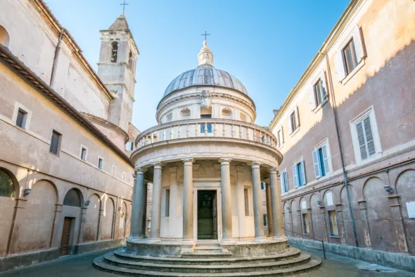
IN THE MOVIE
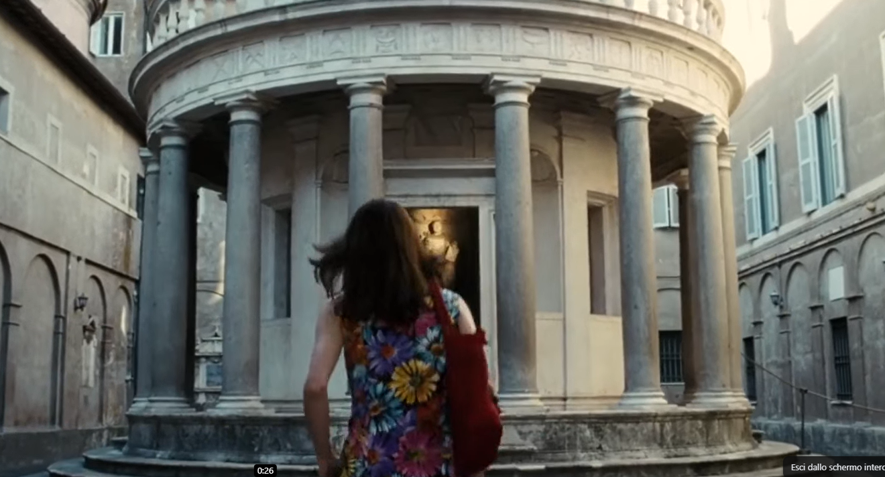
7 / 8
Bramante's Tempietto - The Great Beauty
Environment: The temple
Inside the Renaissance courtyard of San Pietro in Montorio, a quiet architectural gem hides a surreal and silent mystery.
The scene opens with a group of wealthy tourists waiting in silence inside the courtyard of Bramante's Tempietto. Suddenly, a young girl dressed in a white dress appears and mysteriously vanishes into thin air, leaving the characters and the audience suspended between illusion, memory, and the elusive nature of beauty.
The real Tempietto marks the traditional site of Saint Peter's martyrdom, but in the film it transforms into a metaphysical space where logic dissolves into pure mystery
Here the role of women in the journey changes. Instead of following a woman moving through Rome, we see a female figure who becomes part of the city’s beautiful and mysterious image.
At the Tempietto, a mysterious female figure appears inside one of Rome’s most beautiful monuments. Until now, our journey has followed women working and creating in this way relationships in the city. But here the woman becomes someone to observe. The scene introduces a new question: is being visible in the city enough, or is it also important to have the power to tell your own story?
Bramante’s Tempietto was built in the early sixteenth century and is considered one of the most important examples of Renaissance architecture in Rome.
Sorrentino shifts the narrative from occupying space to being represented within it, introducing the relationship between female visibility and the cinematic gaze.
After films centred on women who materially negotiate Rome’s spaces, The Great Beauty introduces a different cinematic relationship between female presence and the city. Sorrentino’s monumental Rome is predominantly experienced through Jep Gambardella’s wandering gaze. Within this structure, female figures can become elements of spectacle alongside architecture and artworks. So the Tempietto allows the itinerary to move from spatial emancipation to the politics of representation: occupying public space and controlling the way one is represented in it are not necessarily the same form of power.
Sorrentino frequently juxtaposes human bodies with monumental architecture, transforming Rome itself into both a character and an object of contemplation.
Technical Details & Metadata
For each scene, structured metadata has been integrated to detail the cinematic context of the film, the location where it was shot, and the academic framework of the project . To enable semantic web interoperability and digital cataloging, this data is modeled using established formal ontologies: Schema.org for entities and web structures, Dublin Core (dcterms) for bibliographic and project metadata, and CIDOC CRM for cultural heritage and architectural classifications.
Cinematic Context
schema: name: La grande bellezza (2013)
schema: director: Paolo Sorrentino
schema: episode: DESCRIZIONE CHIEDI
schema: direction: North - West (315°)
dcterms: type: strong> Historic Site Set
Location
schema: name: Bramante's Tempietto
schema: address : Piazza di San Pietro in Montorio, 2, Roma
schema: GeoCoordinates: 41°53′19.5″N 12°27′59.1″E
crm: P2_has_type Renaissance Religious Architecture
crm:P4_has_time_span: 15th Century (Bramante's Tempietto)
schema: OpeningDate: 1502 (Completion of Bramante's Tempietto)
Project
dcterms: subject Female Encipation Trough Cinema
dcterms: language: en
dcterms:rights Academic use - Alma Mater Studiorum, University of Bologna
External details
Scan the QR code below to access additional documentation.
TODAY
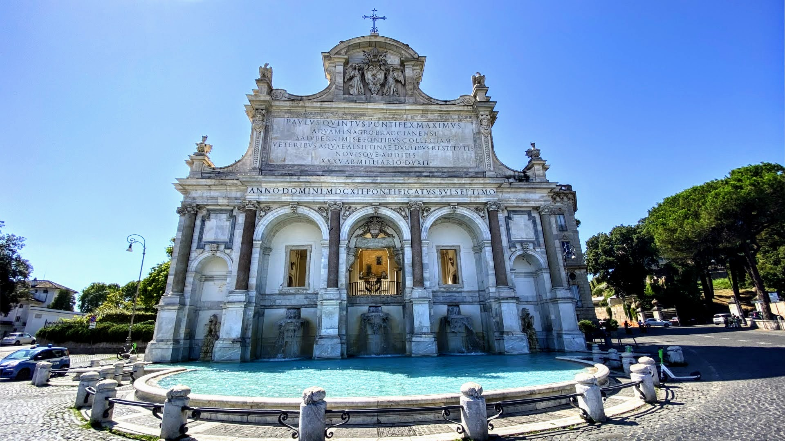
IN THE MOVIE
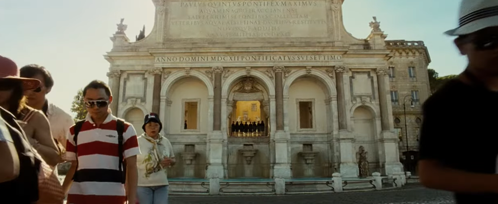
8 / 8
Fontanone and Belvedere del Gianicolo - The Great Beauty
Environment: The ascent
From the heights of the Gianicolo, Rome finally opens up in its entirety and becomes a panorama, a monument, and an image.
The Fontanone dell’Acqua Paola and the Belvedere mark the end of the journey. After passing through houses, courtyards, markets, and streets, the visitor gains a panoramic view of the city. In *The Great Beauty*, however, Rome is often viewed through a male gaze that transforms people and places into a spectacle. Thus, this arrival does not represent a definitive conquest but leaves a question open: does gaining entry to the city also grant the right to tell its story in one’s own voice?
The Acqua Paola Fountain appears in the opening sequence of "The Great Beauty", accompanied by a female choir singing against the backdrop of the Rome skyline.
The journey began inside a home and ends with the whole city in front of us. But one question remains: who gets to tell Rome’s stories?
Our journey began with Antonietta almost completely confined to her home. Step by step, women entered neighborhoods, markets and streets and moved farther across Rome. From the Gianicolo the whole city is finally visible. But being able to enter the city does not always mean being able to decide how its stories are told. The journey ends by asking whether women can not only inhabit Rome, but also tell its stories through their own voices.
The Fontanone dell’Acqua Paola appears at the beginning of The Great Beauty, immediately presenting Rome as an enormous visual spectacle.
The final panorama transforms the politics of urban space into a politics of representation: occupying Rome and possessing the authority to narrate it are two different forms of power.
The ascent to the Gianicolo completes the itinerary’s spatial progression: domestic interior, neighborhood, marketplace, street and finally panorama. Yet The Great Beauty prevents this expansion from becoming a simple narrative of liberation. Rome is predominantly constructed through Jep’s gaze, which transforms the city and many of its inhabitants into objects of contemplation. The final panorama therefore introduces a second dimension of emancipation: beyond the right to inhabit urban space lies the right to determine its meanings and become the subject rather than merely the object of its narratives.
Sorrentino opens The Great Beauty at the Acqua Paola Fountain before introducing Jep, establishing the act of looking at Rome as one of the film’s central concerns.
Technical Details & Metadata
For each scene, structured metadata has been integrated to detail the cinematic context of the film, the location where it was shot, and the academic framework of the project . To enable semantic web interoperability and digital cataloging, this data is modeled using established formal ontologies: Schema.org for entities and web structures, Dublin Core (dcterms) for bibliographic and project metadata, and CIDOC CRM for cultural heritage and architectural classifications.
Cinematic Context
schema: name: Mamma Roma (1962) & The Great Beauty (La grande bellezza, 2013)
schema: director: Pier Paolo Pasolini & Paolo Sorrentino
schema: episode: Final panoramic views of Rome from the monumental fountain terrace
schema: OpeningDate: 1612 (Inauguration of the monumental water display)
Project
dcterms: subject Female Encipation Trough Cinema
dcterms: language: en
dcterms:rights Academic use - Alma Mater Studiorum, University of Bologna
External details
Scan the QR code below to access additional documentation.
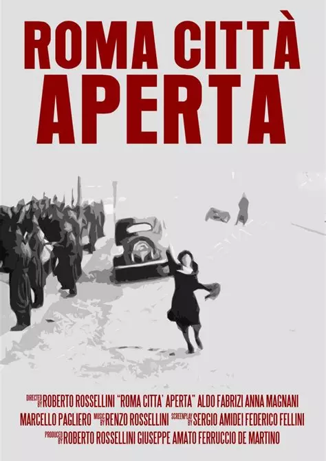
Rome, Open City
Roberto Rossellini (1945)
Rome, Open City is a neorealist war drama film
set in Rome in 1944. The film follows a diverse group of characters coping under the Nazi occupation, and centers on a Resistance fighter trying to escape the city with the help of a Catholic priest.
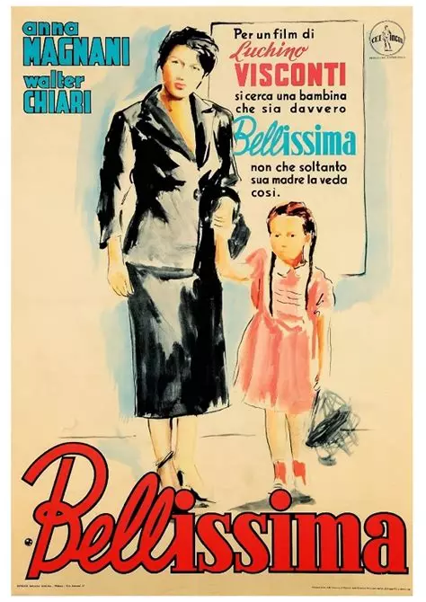
Bellissima
Luchino Visconti (1951)
Bellissima centers on a working-class mother in Rome, Maddalena, who drags her young daughter to Cinecittà Studios to
attend an audition for a new film by Alessandro Blasetti. Maddalena's efforts to promote her daughter grow increasingly
frenzied.
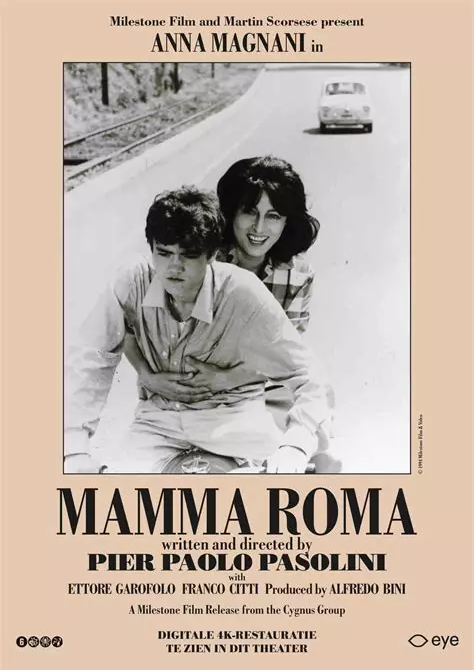
Mamma Roma
Pier Paolo Pasolini (1962)
After her pimp Carmine marries, prostitute Mamma Roma starts a new life as a marketer in Rome to enable her 16-year-old
son Ettore a better life.
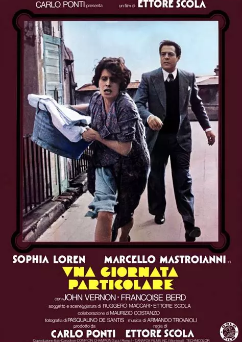
A Special Day
Ettore Scola (1977)
A special day is a movie set in Rome in 1938. Its narrative follows a housewife (Loren) and her neighbor (Mastroianni) who stay home the day
Adolf Hitler visits Benito Mussolini.
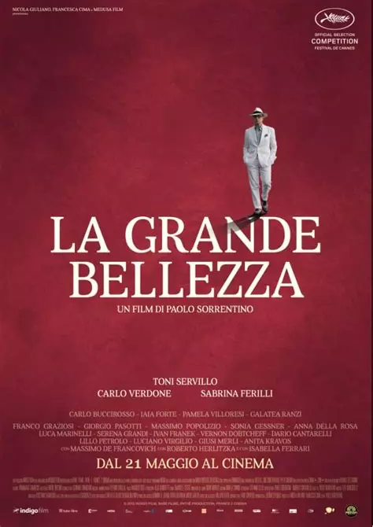
The Great Beauty
Paolo Sorrentino (2013)
The movie follows the story of the protagonist Jep Gambardella: a 65-year-old seasoned journalist and theater critic, mostly committed to wandering among the social
events of a Rome immersed in the beauty of its history and in the superficiality of its inhabitants today, in a
merciless contrast.
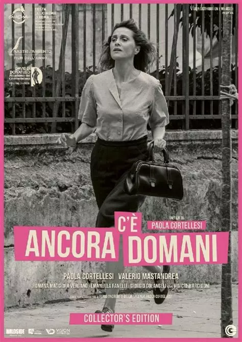
There's Still Tomorrow
Paola Cortellesi (2023)
There's Still Tomorrowis a 2023 Italian period comedy-drama film,
co-written and directed by Paola Cortellesi in her directorial debut. Set in postwar 1940s Italy, it follows Delia
breaking traditional family patterns and aspiring to a different future, after receiving a mysterious letter.